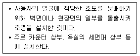
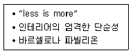
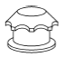
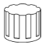
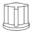
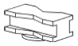
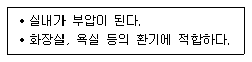
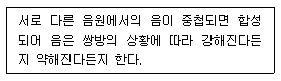

실내건축기사(구) (2016-05-08 기출문제)
1과목: 실내디자인론
1. 전시공간에 관한 설명으로 옳지 않은 것은?
- 전시의 성격은 영리적 전시와 비영리적 전시로 나눌수 있다.
- 공간의 형태와 규모에 관련된 물리적 요건들이 전시공간 특성을 좌우한다.
- 전체 동선체계는 이용자 동선과 관리자 동선으로 대별되며 서로 통합되도록 계획한다.
- 전시실 순회 유형에 따라 전시실 상호간 결합 형식이 결정되며 전체의 전시 계획에 영향을 미친다.
(정답률: 87%)

2. 일종의 전시공간인 쇼룸(show room)의 계획에 관한 설명으로 옳지 않은 것은?
- 관람의 흐름은 막힘이 없어야 한다.
- 입구에는 세심한 디스플레이를 피한다.
- 관람자가 한 번 지나간 곳을 다시 지나가도록 한다.
- 관람에 있어 시각적 혼란을 초래하지 않도록 전후좌우를 한꺼번에 다 보게 해서는 안된다.
(정답률: 78%)
3. 시스템 디자인(system design)에 관한 설명으로 옳은 것은?
- 디자인에서 시스템 적용은 모듈에 의한 표준화, 조립화와 연결된다.
- 시스템 가구는 형태적 측면에서 고려된 것으로 대량생산과는 관계가 없다.
- 시스템 키친(system kitchen)은 주방용기인 그릇 등의 디자인을 통합하는 작업이다.
- 서비스 코어 시스템(service core system)은 가구나 조명 등 실내공간을 보조하는 시스템을 말한다.
(정답률: 78%)
4. 다음 설명에 알맞은 건축화조명은?

- 코브 조명
- 광창 조명
- 광천장 조명
- 캐노피 조명
(정답률: 69%)
5. 다음 중 기능성과 가장 관련이 먼 장식물(accessories)은?
- 수석
- 화초
- 벽시계
- 조명기기
(정답률: 79%)
6. 거실의 가구 배치에 관한 설명으로 옳지 않은 것은?
- ㄱ자형은 시선이 마주치지 않아 안정감이 있다.
- 일자형은 거실의 폭이 좁은 경우에 많이 이용된다.
- 대면형은 일자형에 비해 가구 자체가 차지하는 면적이 작다.
- ㄷ자형은 단란한 분위기를 주며 여러 사람과의 대화시에 적합하다.
(정답률: 86%)
7. 사무실의 책상배치 유형 중 면적효율이 좋고 커뮤니케이션(communication) 형성에 유리하여 공동작업의 형태로 업무가 이루어지는 사무실에 적합한 유형은?
- 동향형
- 대향형
- 자유형
- 좌우대칭형
(정답률: 78%)
8. 특수전시방법 중 현장감을 실감나게 표현하는 방법으로 하나의 사실 또는 주제의 시간 상황을 고정시켜 연출하는 것은?
- 멀티비젼
- 디오라마전시
- 아일랜드전시
- 하모니카전시
(정답률: 72%)
9. 공간의 차단적 구획에 사용되는 것은?
- 조명
- 조각
- 블라인드
- 낮은 칸막이
(정답률: 65%)
10. 착시 현상 중 포겐도르프 도형을 가장 올바르게 표현한 것은?
- 같은 길이의 수직선이 수평선보다 길어 보인다.
- 같은 길이의 직선이 화살표에 의해 길이가 다르게 보인다.
- 사선이 2개 이상의 평행선으로 중단되면 서로 어긋나 보인다.
- 같은 크기의 도형이 상하로 겹쳐져 있을 때 위의 것이 커 보인다.
(정답률: 62%)
11. 다음 중 디자인에서 형태의 부분과 부분, 부분과 전체 사이의 크기, 모양 등의 시각적 질서, 균형을 결정하는 데 가장 효과적으로 사용되는 디자인 원리는?
- 강조
- 비례
- 리듬
- 통일
(정답률: 61%)
12. 아파트의 평면형식 중 중복도형에 관한 설명으로 옳지 않은 것은?
- 부지의 이용률이 높다.
- 프라이버시가 좋지 않다.
- 각 주호의 일조조건이 동일하다.
- 도심지내의 독신자용 아파트에 적용된다.
(정답률: 73%)
13. 상점의 쇼윈도에 관한 설명으로 옳지 않은 것은?
- 쇼윈도의 평면 형식 중 만입형은 점두의 진열면이 크다.
- 쇼윈도의 진열 바닥 높이는 일반적으로 상품의 종류에 따라 결정된다.
- 쇼윈도의 단면 형식 중 다층형은 넓은 도로폭을 지닌 상점에 적용하는 것이 좋다.
- 쇼윈도의 배면 처리 형식 중 개방형은 폐쇄형에 비해 쇼윈도 진열 자체에 대한 주목성이 강조된다.
(정답률: 61%)
14. 현실적 형태 중 자연형태에 관한 설명으로 옳지 않은 것은?
- 자연계에 존재하는 모든 것으로부터 보이는 형태를 말한다.
- 기하학적인 형태는 불규칙한 형태보다 비교적 가볍게 느껴진다.
- 단순한 부정형의 형태를 취하기도 하지만 경우에 따라서는 체계적인 기하학적인 특징을 갖는다.
- 시각과 촉각 등으로 직접 느낄 수 없고 개념적으로만 제시될 수 있는 형태로 순수형태라고도 한다.
(정답률: 74%)
15. 다음 중 실내공간에서 공간의 성격과 분위기를 형성하는 요소와 가장 거리가 먼 것은?
- 설비
- 조명
- 색채
- 질감
(정답률: 86%)
16. 인간이 생활하기 위한 실내공간은 물리적 ㆍ 환경적 ㆍ 기능적 조건에 영향을 받는데, 다음 중 기능적 조건에 속하는 것은?
- 기후
- 기상
- 예술성
- 공간규모
(정답률: 78%)
17. 소파의 골격에 쿠션성이 좋도록 솜, 스폰지 등의 속을 많이 채워 넣고 천으로 감싼 소파로, 구조, 형태상 뿐만 아니라 사용상 안락성이 매우 큰 것은?
- 스툴
- 카우치
- 풀업체어
- 체스터필드
(정답률: 68%)
18. 조명의 연출기법 중 수직벽면을 빛으로 쓸어내리는 듯한 효과를 주기 위해 비대칭 배광 방식의 조명기구를 사용하여 수직벽면에 균일한 조도의 빛을 비추는 기법은?
- 스파클 기법
- 월워싱 기법
- 실루엣 기법
- 그레이징 기법
(정답률: 88%)
19. 다음과 가장 관계가 깊은 사람은?

- 루이스 설리번
- 르 꼬르뷔지에
- 미스 반 데어 로에
- 프랭크 로이드 라이트
(정답률: 73%)
20. 상품계획, 상점계획, 판촉, 접객서비스 등의 제반 요소를 시각적으로 구체화시켜 상점이미지를 고객에게 인식시키는 표현전략을 무엇이라 하는가?
- POP
- VMD
- TOKEN DISPLAY
- VOLUME SPACE DISPLAY
(정답률: 87%)
2과목: 색채학
21. 비누 거품이나 전복 껍질 등에서 무지개 같은 색이 나타나는 것을 볼 수 있는데 이것은 빛의 어떠한 현상에 의해 나타나는 색인가?
- 왜곡현상
- 투과현상
- 간섭현상
- 직진현상
(정답률: 77%)
22. 혼색원판의 색채 분할 면적의 비율을 변화함으로써 여러 색채를 만들어 이것을 색표로 구현하여 백색량과 흑색량의 기호로 색을 표시한다는 원리는 무슨 표색계인가?
- 오스트발트
- 먼셀
- 그래이브스
- 비렌
(정답률: 73%)
23. 색채판별능력, 색채조절능력을 요구하며 색채계획에서 가장 먼저 진행해야 할 단계는?
- 색채환경분석
- 색채심리분석
- 색채전달계획
- 디자인에 적용
(정답률: 79%)
24. 현색계에 대한 설명으로 옳은 것은?
- 정확한 측정이 가능하다.
- 빛의 혼색실험 결과에 기초를 둔 것이다.
- 색편의 배열 및 색채 수를 용도에 맞게 조정할 수 있다.
- 색 사이의 간격이 좁아 정밀한 색좌표를 구할 수 있다.
(정답률: 56%)
25. 보색에 대한 설명으로 틀린 것은?
- 보색인 2색은 색상환상에서 90° 위치에 있는 색이다.
- 두 가지 색광을 섞어 백색광이 될 때 이 두 가지 색광을 서로 상대색에 대한 보색이라고 한다.
- 두 가지 색의 물감을 섞어 회색이 되는 경우, 그 두색은 보색관계이다.
- 물감에서 보색의 조합은 빨강 - 청록, 초록 - 자주이다.
(정답률: 74%)
26. 다음 중 빛의 3원색의 조건인 것은?
- 다른 색으로 분해 가능하다.
- 다른 색광의 혼합에 의해 만들 수 있다.
- 이들 색을 모두 혼합하면 백색광이 된다.
- 이들로부터 모든 색을 만들 수 없다.
(정답률: 80%)
27. 가시광선이 주는 밝기의 감각이 파장에 따라서 달라지는 정도를 나타내는 것은?
- 비시감도
- 시감도
- 명시도
- 암시도
(정답률: 70%)
28. 심리 ㆍ 물리적인 빛의 혼색실험에 기초하여 색을 표시하는 표색계에 해당되는 것은?
- 혼색계
- 현색계
- 먼셀 표색계
- 물체색계
(정답률: 78%)
29. 한국의 전통색 중 동쪽, 봄을 의미히는 오정색은?
- 녹색
- 청색
- 백색
- 홍색
(정답률: 72%)
30. 제품의 디자인의 색채계획 중 고려하지 않아도 되는 것은?
- 주관성
- 심미성
- 실용성
- 조형성
(정답률: 75%)
31. 색의 지각현상에 대한 설명 중 틀린 것은?
- 명시도는 그 색 고유의 특성이라기보다는 배경과의 관계에 의해 결정된다.
- 장파장 쪽의 색상은 진출ㆍ팽창해 보이고, 단파장 쪽의 색상은 후퇴ㆍ수축해 보인다.
- 부의 잔상이란 자극을 제거한 후에도 원자극과 동일한 감각 경험을 일으키는 것이다.
- 고명도, 고채도, 난색이 일반적으로 주목성이 높다.
(정답률: 71%)
32. 오스트발트 색채조화론의 내용과 관련된 용어가 아닌 것은?
- 등백계열의 조화
- 등순계열의 조화
- 동등조화
- 윤성조화
(정답률: 51%)
33. 오스트발트의 색채조화론 중에서 틀린 것은?
- 색의 기호가 동일한 두 색은 조화한다.
- 색의 기호 중 앞의 문자가 동일한 두 색은 조화한다.
- 색상이 동일한 두 색은 조화한다.
- 색의 기호 중 앞의 문자와 뒤의 문자가 동일한 색은 조화하지 않는다.
(정답률: 74%)
34. 청색에 흰색물감을 혼합하였을 때의 변화는?
- 청색보다 명도, 채도 모두 높아졌다.
- 청색보다 명도는 높아졌고 채도는 낮아졌다.
- 청색보다 명도는 낮아졌고 채도는 높아졌다.
- 청색보다 명도, 채도 모두 낮아졌다.
(정답률: 80%)
35. 실내배색의 일반적인 원리로 적합하지 않은 것은?
- 벽은 실내에서 가장 많이 시야에 들어오는 부위로 벽색이 실내 분위기에 큰 영향을 준다.
- 천장색은 보통 고명도색이 좋고, 이 경우 조명효율도 향상된다.
- 걸레받이는 변화를 주기 위해 벽색과 현저히 구별되는 색상의 고명도색이 좋다.
- 바닥색은 벽과 구별되는 것이 좋고, 동색상일 경우는 벽보다 명도가 낮은 것이 무난하다.
(정답률: 82%)
36. 먼셀 표색계에 대한 설명 중 옳은 것은?
- 모든 색은 흑(B) + 백(W) + 순색(C) = 100%가 되는 혼합비에 의하여 구성되어 있다.
- 먼셀의 색상에서 기본색은 빨강, 노랑, 녹색, 파랑, 보라의 5색이다.
- 먼셀 표색계는 복원추체 모양이다.
- 무채색 축을 중심으로 24 색상을 가진 등색상 삼각형이 배열되어 있다.
(정답률: 54%)
37. 다음 설명 중에서 옳은 것은?
- 일반적으로 조화는 질서 있는 배색에서 생긴다.
- 문ㆍ스펜서 조화론은 오스트발트 표색계를 사용한 것이다.
- 색채의 조화ㆍ부조화는 주관적인 것이기 때문에 인간 공통의 어떠한 법칙을 찾아내는 것은 불가능하다.
- 오스트발트 조화론은 CIE 표색계를 사용한 것이다.
(정답률: 61%)
38. 장파장의 색상은 시간의 경과를 길게 느끼고 단파장의 색상은 시간의 경과를 짧게 느낀다는 색채의 기능주의적 사용법을 역설한 사람은?
- 먼셀
- 문ㆍ스펜서
- 파버비렌
- 오스트발트
(정답률: 54%)
39. 주광 아래서나 어떤 색광 아래서 흰종이를 같은 흰색으로 지각하는 현상은?
- 색각항상
- 베졸드효과
- 색순응
- 잔상
(정답률: 48%)
40. 색의 주목성에 관한 설명 중 틀린 것은?
- 한색 계통이 주목성이 높다.
- 난색 계통이 주목성이 높다.
- 고채도의 색이 주목성이 높다.
- 명시도가 높은 색이 주목성이 높다.
(정답률: 78%)
3과목: 인간공학
41. 근육 운동을 시작한 직후에는 혐기성 대사에 의하여 에너지가 공급된다. 이 때 소비되는 에너지원이 아닌 것은?
- 지방
- 글리코겐
- 크레아틴 인산(CP)
- 아데노신 삼인산(ATP)
(정답률: 59%)
42. 60fL의 소요휘도를 요구하는 시각적 작업 대상물의 반사율이 60%일 때 소요조명은 몇 fc인가?
- 50
- 67
- 88
- 100
(정답률: 59%)
43. 인체계측의 방법 중 길이, 무게, 면적 등을 구하는 계측을 무엇이라 하는가?
- 동적계측
- 생리적계측
- 형태적계측
- 체육적계측
(정답률: 69%)
44. 인간-기계체계(man-machine system)에 대한 설명을 적합하지 않은 것은?
- 인간과 기계가 유기적으로 결합되어 있다.
- 인간과 기계는 일반적으로 독립적으로 행위를 수행한다.
- 기계의 작동결과를 알기 위해서는 표시장치가 필요하다.
- 인간의 의도를 기계에 전달하기 위해서는 조종장치가 필요하다.
(정답률: 79%)
45. 조명에 관한 용어의 설명으로 맞는 것은?
- 조도비 : 표적의 광도와 배경의 광도의 차를 나타내는 척도이다.
- 조도 : 어떤 물체나 표면에 도달하는 빛의 단위면적당 밀도를 말한다.
- 반사율 : 표적의 광속발산도와 배경의 광속발산도와의 차를 말한다.
- 광속발산도 : 단위면적당 표면에 반사 또는 방출되는 빛의 양을 말하며 표시장치와는 관계가 없다.
(정답률: 76%)
46. 밝은 곳에서 어두운 곳으로 갈수록 단파장의 감도가 높아져 파란색이 더 눈에 띠게 되는 현상을 무엇이라 하는가?
- 명소시 현상
- 푸르킨예 현상
- 암소시 현상
- 메타메리즘 현상
(정답률: 81%)
47. 생리적 상태 변동을 전류로 변환하여 측정되는 것으로 뇌파 전위도를 기록하는 것은?
- EEG
- EMG
- ECG
- EOG
(정답률: 46%)
48. 터널에서 입구 부근은 밝게 하고, 서서히 조도를 저하시키는 조명 방법은?
- 전반조명
- 국부조명
- 완화조명
- 투과조명
(정답률: 77%)
49. 기계의 설치와 관련된 설명으로 틀린 것은?
- 구급용구의 표지는 백색바탕에 녹십자 표시를 한다.
- 설치한 기계의 큰 면적은 눈에 잘 띄도록 황토색으로 칠한다.
- 파이프(pipe)나 호스(hose)의 연결부, 소화용수의 본관 등은 적색으로 칠한다.
- 전기의 배전반이나 두꺼비집 상자의 외부는 청색, 문짝 내부는 황색으로 칠하여 주의를 환기시킨다.
(정답률: 62%)
50. 인간공학 연구의 3가지 기준 요건과 거리가 먼 것은?
- 적절성
- 무오염성
- 진행성
- 기준척도의 신뢰성
(정답률: 62%)
51. 누적외상성 질환(CTDs)을 줄이기 위한 방법으로 적절하지 않은 것은?
- 반복적인 동작이 일어나지 않도록 한다.
- 조직(tissue)에 가해지는 압력을 줄일 수 있도록 한다.
- 작업 중 발생하는 체열을 발산하기 위하여 작업장의 온도는 21℃ 이하로 유지한다.
- 작업 자세에 있어 팔꿈치가 몸통의 중간위치보다 더 높이 올라가지 않도록 한다.
(정답률: 76%)
52. 조용한 사무실에서 속삭임을 들을 수 있는 최대 소음 수준은?
- 20dB
- 40dB
- 80dB
- 100dB
(정답률: 67%)
53. 기계로부터의 정보전달은 상태표시기에 의해서 이루어진다. 기계의 조작은 어느 것에 의해서 이루어지는가?
- 제어기
- 표현기
- 운동기
- 감각기
(정답률: 77%)
54. 단회전용 조종장치로 가장 적절한 것은?




(정답률: 59%)
55. 소음이 작업능률에 미치는 영향이 아닌 것은?
- 간헐소음이나 충격소음은 정상소음에 비해 방해가 크다.
- 소음은 작업의 정확성보다 전체 작업량에 많은 영향을 미친다.
- 무의미한 정상소음은 음압수준 90dB을 넘지 않는 한작업능률에는 영향을 미치지 않는다.
- 저주파 소음보다는 2,000Hz를 넘는 고주파 성분을 지닌 소음이 작업능률에 더 많은 영향을 미친다.
(정답률: 62%)
56. 소리의 현상이 아닌 것은?
- 순응(順應)
- 반사(反射)
- 회절(回折)
- 공명(共鳴)
(정답률: 75%)
57. 제어장치의 배치에 있어 복잡한 경우 해당하는 부분이나 그룹을 확실하게 구분하기 위한 방법 중 가장 적절하지 않은 것은?
- 부착면을 달리한다.
- 각 부분마다 다른 색깔로 한다.
- 각 그룹마다 확실한 경계선을 긋는다.
- 수직으로 간격을 두는 것이 수평으로 간격을 두는 것보다 좋다.
(정답률: 76%)
58. 근육, 뼈의 표면, 건(tendon) 등 피하조직에 퍼져있는 감각수용기는?
- 시각
- 청각
- 후각
- 체성감관
(정답률: 83%)
59. 시 식별에 영향을 주는 요인이 아닌 것은?
- 휘광(glare)
- 대비(contrast)
- 조도(illuminance)
- 색온도(color temperature)
(정답률: 67%)
60. 망막의 두 가지 광수용기에 대한 설명으로 틀린 것은?
- 간상체는 명암(흑백)을 인식한다.
- 간상체는 주로 밤에 기능을 한다.
- 원추체는 황반(favea)에 집중되어 있다.
- 원추체에 이상이 생길 경우에는 야맹증에 걸리게 된다.
(정답률: 65%)
4과목: 건축재료
61. 알루미늄의 물리적 성질에 관한 설명 중 옳지 않은 것은?
- 비중은 약 2.7, 융점은 약 659℃ 정도이다.
- 열ㆍ전기 전도성이 크고 반사율이 높다.
- 열팽창계수는 철과 거의 유사하다.
- 상온에서 판, 선으로 압연가공하면 경도와 인장강도는 증가하고 연신율은 감소한다.
(정답률: 58%)
62. 점토제품에서 S.K 번호가 나타내는 것은?
- 소성온도
- 제품종류
- 점토의 성분
- 수분함유량
(정답률: 73%)
63. 보통 투명 창유리에 관한 설명 중 옳지 않은 것은?
- 맑은 것은 90% 이상의 가시광선을 투과시킨다.
- 보통 소다석회유리가 사용된다.
- 불연재료이긴 하나 단열용이나 방화용으로는 부적합하다.
- 건강에 유익한 자외선을 충분히 투과시킨다.
(정답률: 69%)
64. 한중 콘크리트에서 초기동해 방지에 필요한 콘크리트의 압축강도는?
- 2MPa
- 5MPa
- 7MPa
- 10MPa
(정답률: 65%)
65. 다음 시멘트 모르타르 중 방수 모르타르에 속하지 않는 것은?
- 질석 모르타르
- 규산질 모르타르
- 발수제 모르타르
- 액체방수 모르타르
(정답률: 59%)
66. 목재의 역학적 성질에 관한 설명으로 옳은 것은?
- 목재의 기건비중을 측정하면 목재의 강도 상태를 추정할 수 있다.
- 섬유포화점 이하에서는 함수율 감소에 따라 강도 및 인성이 증대된다.
- 가력방향에 따른 목재강도는 응력방향의 수직인 경우가 최대가 된다.
- 동일한 수종인 경우 목재의 역학적 성질은 동일하다.
(정답률: 40%)
67. 강의 기계적 성질과 관련된 설명으로 옳지 않은 것은?
- 구조용 강재에 인장력을 가하게 되면 응력-변형도(stress-strain curve) 선도를 얻을 수 있다.
- 탄성구간의 기울기를 탄성계수라 한다.
- 강재를 압축할 경우 압축강도는 항복점 부근까지는 인장인 경우와 같으나, 그 이후는 압축이 진행됨에 따라 최대하중은 인장인 경우보다 높아진다.
- 강은 250℃ 부근에서 인장강도가 최대로 되나 반대로 연신율, 단면수축률은 극소로 된다.
(정답률: 55%)
68. 콘크리트의 건조수축에 관한 설명으로 옳지 않은 것은?
- 시멘트의 화학성분이나 분말도에 따라 건조수축량은 변화한다.
- 콘크리트의 건조수축을 적게 하기 위해서 배합 시 가능한 한 단위수량을 적게 한다.
- 사암이나 점판암을 골재로 이용한 콘크리트는 건조수축량이 큰 편이고, 석영, 석회암을 이용한 것은 적은 편이다.
- 콘크리트의 습윤양생기간은 건조수축에 크게 영향을 주며 이 기간이 길면 길수록 건조수축은 적어진다.
(정답률: 56%)
69. 콘크리트 다짐바닥, 콘크리트 도로포장의 전열방지를 위해 사용되는 것은?
- 코너비드(corner bead)
- PC 강선
- 와이어메시(wire mesh)
- 펀칭메탈(punching metal)
(정답률: 69%)
70. 발포제로서 보드상으로 성형하여 단열재로 널리 사용되며 건축벽 타일, 천장재, 전기용품 등에 쓰이는 열가소성 수지는?
- 폴리에스테르수지
- 실리콘수지
- 아크릴수지
- 폴리스티렌수지
(정답률: 48%)
71. 다음 도료 중 뉴트로셀룰로오스 등의 천연수지를 이용한 자연건조형으로 단시간에 도막이 형성되는 것은?
- 세락니스
- 래커에나멜
- 캐슈(cashew)수지도료
- 유성에나멜페인트
(정답률: 62%)
72. 점토의 물리적 성질에 관한 설명 중 옳은 것은?
- 압축강도는 인장강도의 약 5배 정도이다.
- 가소성은 점토입자가 클수록 좋다.
- 기공률은 20～50%로 보통상태에서 10% 내외이다.
- 철산화물이 많으면 황색을 띠게 되고, 석회물질이 많으면 적색을 띠게 된다.
(정답률: 55%)
73. 말구지름 20cm, 길이가 5.5m인 통나무가 5개가 있다. 이 통나무의 재적으로 옳은 것은?
- 0.3m3
- 1.1m3
- 1.8m3
- 2.1m3
(정답률: 58%)
74. 고로슬래그 쇄석에 관한 설명으로 옳지 않은 것은?
- 철을 생산하는 과정에서 용광로에서 생기는 광재를 공기 중에서 서서히 냉각시켜 경화된 것을 파쇄하여 만든다.
- 투수성은 보통골재의 경우보다 작으므로 수밀콘크리트에 적합하다.
- 고로슬래그 쇄석을 활용한 콘크리트는 다른 암석을 사용한 콘크리트보다 건조수축이 적다.
- 다공질이기 때문에 흡수율이 크므로 충분히 살수하여 사용하는 것이 좋다.
(정답률: 37%)
75. 점토제품에 발생하는 백화방지 대책으로 옳지 않은 것은?
- 흡수율이 작은 벽돌이나 타일을 사용한다.
- 벽돌이나 줄눈에 빗물이 들어가지 않는 구조로 한다.
- 줄눈 모르타르의 단위시멘트량을 높게 한다.
- 수용성 염류가 적은 소재를 사용한다.
(정답률: 70%)
76. 실리콘(silicon)수지에 관한 설명으로 옳지 않은 것은?
- 실리콘수지는 내열성, 내한성이 우수하여 -60～260℃의 범위에서 안정하다.
- 탄성을 지니고 있고, 내후성도 우수하다.
- 발수성이 있기 때문에 건축물, 전기 절연물 등의 방수에 쓰인다.
- 도료로 사용한 경우 안료로서 알루미늄 분말을 혼합한 것은 내화성이 부족하다.
(정답률: 63%)
77. U자형 줄눈에 충전하는 실링재를 밑면에 접착시키지않기 위해 붙이는 테이프로 3면 접착에 의한 파단을 방지하기 위한 것은?
- FRP(fiber reinforced plastics)
- 아스팔트 프라이머(asphalt primer)
- 본드 브레이커(Bond braker)
- 블로운 아스팔트(blown asphalt)
(정답률: 60%)
78. 목재의 절취단면을 나타내는 용어가 아닌 것은?
- 횡단면
- 수심단면
- 방사단면
- 접선단면
(정답률: 45%)
79. 유성에나멜페인트에 관한 설명 중 옳지 않은 것은?
- 안료에 유성바니시를 혼합한 액상재료이다.
- 알루미늄페인트는 유성에나멜페인트의 일종이다.
- 도막은 광택이 있고 경도가 크다.
- 안료나 휘발성 용제를 적게 혼합하면 무광택에나멜이 된다.
(정답률: 54%)
80. 집성재(集成材)에 관한 설명 중 옳지 않은 것은?
- 충분히 건조된 건조재를 사용하므로 비틀림, 변형 등이 생기지 않는다.
- 대단면, 만곡재 등 임의의 단면형상을 갖는 인공목재를 비교적 용이하게 제작할 수 있다.
- 여러 개의 작은 단면을 합칠 때는 합판과 같이 섬유방향을 직교(直交)시킨다.
- 제재품이 가진 옹이 등의 결점을 분산시키므로 강도의 편차가 적다.
(정답률: 64%)
5과목: 건축일반
81. 조적조에서 벽체의 두께를 결정하는 요소와 가장 거리가 먼 것은?
- 벽길이
- 벽높이
- 벽돌의 제조법
- 건축물의 층수
(정답률: 69%)
82. 건축허가 등을 할 때 미리 소방본부장 또는 소방서장의 동의를 받아야 하는 건축물 등의 범위로 옳지 않은 것은?
- 연면적이 300m2 이상인 건축물
- 항공기격납고
- 차고ㆍ주차장으로 사용되는 층 중 바닥면적이 200m2이상인 층이 있는 시설
- 지하층 또는 무창층이 있는 건축물로서 바닥면적이 150m2 이상인 층이 있는 것
(정답률: 57%)
83. 스프링클러설비를 설치하여야 하는 특정소방대상물 중 스프링클러설비를 모든 층에 설치하여야 하는 수용인원의 기준으로 옳은 것은? (단, 문화 및 집회시설로서 동 ㆍ 식물원은 제외)
- 50명 이상
- 100명 이상
- 200명 이상
- 300명 이상
(정답률: 74%)
84. 방염대상물품의 방염성능기준으로 옳지 않은 것은?
- 탄화한 면적은 50cm2 이내, 탄화한 길이는 20cm 이내일 것
- 버너의 불꽃을 제거한 때부터 불꽃을 올리지 아니하고 연소하는 상태가 그칠 때까지 시간은 30초 이내일 것
- 버너 불꽃을 제거한 때부터 불꽃을 올리며 연소하는 상태가 그칠 때까지 시간은 20초 이내일 것
- 불꽃에 의하여 완전히 녹을 때까지 불꽃의 접촉횟수는 2회 이상일 것
(정답률: 74%)
85. 6층 이상인 건축물로서 배연설비를 설치하여야 하는 대상이 아닌 것은?
- 수련시설 중 유스호스텔
- 운동시설
- 의료시설 중 정신병원
- 관광휴게시설
(정답률: 59%)
86. 실내마감이 불연재료이고 자동식소화설비가 설치된 각 층 바닥면적이 1,000m2인 업무시설의 11층은 최소 몇 개의 영역으로 방화구획 하여야 하는가?
- 층간 방화구획
- 2개의 영역으로 구획
- 3개의 영역으로 구획
- 5개의 영역으로 구획
(정답률: 68%)
87. 한국의 전통사찰 본당에서 내부공간 구성의 1차 인지요소로서 주두, 소로, 첨차 등으로 이루어져 있으며 심리적이고 극적인 효과를 유도하는 구성요소는?
- 마루
- 개구부
- 천장
- 공포
(정답률: 68%)
88. 주철과 유리로 만들어졌으며 조셉 팩스톤(Joseph Paxton)이 1851년 런던 대박람회 건물로 설계한 대형 건축물은?
- 수정궁(Crystal Palace)
- 브라이튼 궁전(Brighton Palace)
- 퐁피두 센터(Pompidou Center)
- 대영박물관
(정답률: 71%)
89. 조립식 건축의 장점으로 가장 거리가 먼 것은?
- 공사기간의 단축
- 노동력 절감
- 품질향상
- 접합부의 높은 강성 확보
(정답률: 67%)
90. 콘크리트 공사에서의 최소 피복두께에 관한 설명 중 옳지 않은 것은?
- 피복의 목적은 내구, 내화, 부착력 확보가 목적이다.
- 피복두께란 콘크리트 표면에서 주근 중심까지의 거리를 말한다.
- 옥외의 공기나 흙에 직접 접하지 않는 콘크리트 기둥의 최소 피복두께는 40mm이다.
- 흙에 접하여 콘크리트를 친 후 영구히 흙에 묻혀 있는 콘크리트의 최소 피복두께는 80mm이다.
(정답률: 65%)
91. 건축법 제49조(건축물의 피난시설 및 용도제한 등)제1항과 관련하여 건축물로부터 바깥쪽으로 나가는 출구를 설치하여야 하는 건축물에 해당되지 않는 것은?
- 문화 및 집회시설 중 동 · 식물원
- 업무시설 중 국가 또는 지방자치단체의 청사
- 위락시설
- 교육연구시설 중 학교
(정답률: 71%)
92. 보강 블록조에서 테두리보를 설치하는 이유로 옳지 않은 것은?
- 상부에서 오는 하중을 균등히 분포시키기 위해서
- 가로 철근을 정착시키기 위해서
- 벽면의 수직균열을 방지하기 위해서
- 분산된 벽체를 일체로 연결시키기 위해서
(정답률: 57%)
93. 방염성능기준 이상의 실내장식물 등을 설치하여야 하는 특정소방대상물이 아닌 것은?
- 종합병원
- 숙박시설
- 옥내수영장
- 방송국
(정답률: 83%)
94. 소화활동설비 중 연결송수관설비를 설치하여야 하는 특정소방대상물의 층수 및 연면적 기준으로 옳은 것은? (단, 위험물 저장 및 처리시설 중 가스시설 또는 지하구는 제외)
- 층수가 5층 이상으로서 연면적 6천m2 이상인 것
- 층수가 5층 이상으로서 연면적 1만m2 이상인 것
- 층수가 7층 이상으로서 연면적 6천m2 이상인 것
- 층수가 7층 이상으로서 연면적 1만m2 이상인 것
(정답률: 53%)
95. 1층의 층고는 5m, 2층부터 11층까지의 층고는 3m, 각층의 바닥면적은 2,000m2인 업무시설에 설치하여야 하는 비상용승강기의 최소 대수는?
- 설치대상이 아님
- 1대
- 2대
- 3대
(정답률: 47%)
96. 건축물의 건축주가 착공신고를 하는 때에 해당 건축물의 설계자로부터 구조 안전의 확인 서류를 받아 허가 권자에게 제출하여야 하는 건축물의 기준으로 옳지 않은 것은?
- 처마높이가 9m 이상인 건축물
- 연면적이 300m2 이상인 건축물
- 기둥과 기둥 사이의 거리가 10m 이상인 건축물
- 국토교통부령으로 정하는 지진구역 안의 건축물
(정답률: 58%)
97. 문화 및 집회시설(전시장 및 동 · 식물원 제외)의 경우 반자의 최소 높이는? (단, 집회실 바닥면적이 200mm2이상이며, 기계환기장치를 설치하지 않은 경우)
- 3m 이상
- 4m 이상
- 5m 이상
- 6m 이상
(정답률: 73%)
98. 기둥에 안정감을 주기 위해 착시효과를 이용한 것은?
- 볼트(Vault)
- 엔타시스(Entasis)
- 버트레스(Buttress)
- 니치(Niche)
(정답률: 73%)
99. 공동주택과 오피스텔의 난방설비를 개별난방방식으로 하는 경우에 대한 기준으로 옳은 것은?
- 보일러의 연도는 개별연도로 설치한다.
- 보일러실의 공기 흡입구와 배기구는 사용 중이지 않을 경우는 닫힌 구조로 한다.
- 기름보일러를 설치하는 경우에는 기름저장소를 보일러실 내부에 배치한다.
- 보일러실과 거실 사이의 경계벽은 출입구를 제외하고 는 내화구조의 벽으로 구획한다.
(정답률: 59%)
100. 고딕 양식의 요소와 가장 거리가 먼 것은?
- 첨두아치
- 플라잉 버트레스
- 트레이서리
- 돔
(정답률: 67%)
6과목: 건축환경
101. 중력환기에 관한 설명으로 옳지 않은 것은?
- 중력환기량은 개구부 면적에 비례하여 증가한다.
- 중력환기량은 실내외의 온도차가 클수록 많아진다.
- 실내외의 온도차에 의한 공기의 밀도차가 원동력이 된다.
- 중성대의 하부는 항상 공기의 유출측, 상부는 공기의 유입측이 된다.
(정답률: 70%)
102. 측창채광과 비교한 천창채광의 특징에 관한 설명으로 옳지 않은 것은?
- 비막이에 불리하다.
- 채광량 확보에 불리하다.
- 조도 분포의 균일화에 유리하다.
- 근린의 상황에 따라 채광을 방해받는 경우가 적다.
(정답률: 73%)
103. 다음의 건축재료 중 열전도율이 가장 작은 것은?
- 타일
- 합판
- 강재
- 점토벽돌
(정답률: 59%)
104. 각종 광원에 관한 설명으로 옳지 않은 것은?
- 형광램프는 점등장치를 필요로 한다.
- 고압수은램프는 광속이 큰 것과 수명이 긴 것이 특징이다.
- 할로겐전구는 소형화가 가능하나 연색성이 나쁘다는 단점이 있다.
- LED램프는 긴 수명, 낮은 소비전력, 높은 신뢰성 등의 장점이 있다.
(정답률: 72%)
1⑤. 건축물의 에너지절약을 위한 단열계획 내용으로 옳지 않은 것은?
- 외벽 부위는 내단열로 시공한다.
- 건물의 창 및 문은 가능한 작게 설계한다.
- 외벽의 모서리 부분은 단열재를 연속적으로 설치한다.
- 발코니 확장을 하는 공동주택에는 로이(Low-E) 복층창이나 삼중창을 설치한다.
(정답률: 68%)
106. 실내외의 공기유출의 방지 효과와 아울러 출입 인원을 조절할 목적으로 설치하는 문은?
- 회전문
- 미서기문
- 미닫이문
- 여닫이문
(정답률: 81%)
107. 다음 중 건축물의 소음대책과 가장 거리가 먼 것은? (단, 소음원이 외부에 있는 경우)
- 창문의 밀폐도를 높인다.
- 실내의 흡음률을 줄인다.
- 벽체의 중량을 크게 한다.
- 소음원의 음원세기를 줄인다.
(정답률: 65%)
108. 조명에서 발생하는 눈부심에 관한 설명으로 옳지 않은 것은?
- 광원의 크기가 클수록 눈부심이 강하다.
- 광원의 휘도가 작을수록 눈부심이 강하다.
- 광원이 시선에 가까울수록 눈부심이 강하다.
- 배경이 어둡고 눈이 암순응 될수록 눈부심이 강하다.
(정답률: 74%)
109. 수조면의 단위면적에 입사하는 광속으로 정의되는 용어는?
- 조도
- 광도
- 휘도
- 광속발산도
(정답률: 38%)
110. 통기관의 설치 목적으로 옳지 않은 것은?
- 배수관 내의 물의 흐름을 원활히 한다.
- 은폐된 배수관의 수리를 용이하게 한다.
- 사이폰 작용 및 배압으로부터 트랩의 봉수를 보호한다.
- 배수관 내에 신선한 공기를 유통시켜 관내의 청결을 유지한다.
(정답률: 56%)
111. 온수난방에 관한 설명으로 옳은 것은?
- 추운 지방에서도 동결의 우려가 없다.
- 온수의 잠열을 이용하여 난방하는 방식이다.
- 증기난방에 비하여 난방부하 변동에 따른 온도 조절이 어렵다.
- 증기난방에 비하여 열용량이 커서 예열시간이 길다.
(정답률: 65%)
112. 실내공기오염의 종합적 지표로 사용되는 오염물질은?
- CO
- CO2
- SO2
- 부유분진
(정답률: 67%)
113. 잔향시간에 관한 설명으로 옳지 않은 것은?
- 실내의 잔향음의 대소를 평가하는 지표이다.
- 잔향시간이 너무 길면 음의 명료도가 저하된다.
- 잔향시간은 실내가 확산음장이라고 가정하여 구해진 개념이다.
- 음악감상을 주로 하는 실은 대화를 주로 하는 실보다 짧은 잔향시간이 요구된다.
(정답률: 71%)
114. 다음 설명에 알맞은 환기방식은?

- 중력환기(자연급기와 자연배기의 조합)
- 제1종 환기(급기팬과 배기팬의 조합)
- 제2종 환기(급기팬과 자연배기의 조합)
- 제3종 환기(자연급기와 배기팬의 조합)
(정답률: 73%)
115. 다음 중 간접배수를 하지 않아도 되는 것은?
- 세면대
- 제빙기
- 세탁기
- 식기세정기
(정답률: 69%)
116. 1000명을 수용하는 강당에서 실온을 20℃로 유지하기 위한 필요 환기량은? (단, 외기온도 10℃, 1인당 발열량 30W, 공기의 비열 1.21kJ/m3· K이다.)
- 2479.3m3/h
- 5427.6m3/h
- 8925.6m3/h
- 9842.5m3/h
(정답률: 47%)
117. 용적이 5,000m3인 극장의 잔향시간을 1.6초에서 0.8초로 줄이기 위해 추가로 필요한 흡음력은? (단, sabine의 잔향시간 계산식 사용)
- 약 200m2
- 약 500m2
- 약 1,000m2
- 약 1,500m2
(정답률: 50%)
118. 다음 설명에 알맞은 음과 관련된 현상은?

- 세기
- 회절
- 간섭
- 굴절
(정답률: 74%)
119. 주관적 온열요소 중 인체의 활동상태의 단위로 사용되는 것은?
- W
- RH
- met
- clo
(정답률: 58%)
120. 급수방식 중 수도직결방식에 관한 설명으로 옳지 않은 것은?
- 고층으로의 급수가 어렵다.
- 급수압력이 항상 일정하다.
- 정전으로 인한 단수의 염려가 없다.
- 위생성 측면에서 바람직한 방식이다.
(정답률: 58%)
전체 동선체계는 이용자와 관리자의 이동 경로를 구분하여 계획하고, 이를 통합하여 전시공간을 보다 효율적으로 관리할 수 있도록 한다. 이는 전시공간의 기능성과 편의성을 높이는 중요한 요소이다.